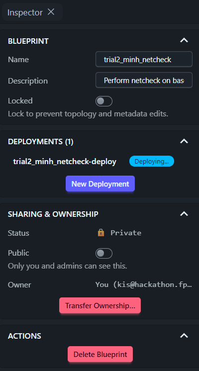
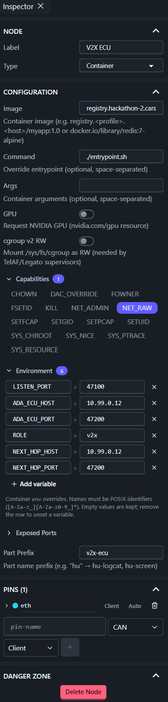
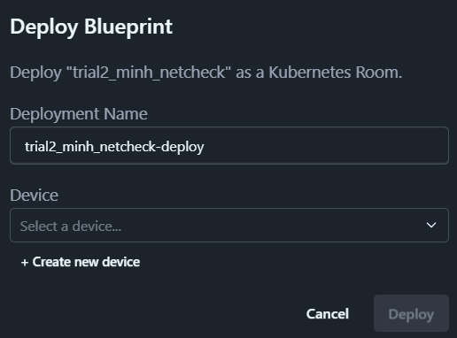

Deploying a Blueprint on CarSky — End-to-End Walkthrough¶
Worked example: the netcheck connectivity test (tools/netcheck/), from source file to running Room. Every step M1–M12 of baseline-connectivity-smoke-test.md is covered here in order — several are performed by an agent rather than by hand, and §5 states which; that note owns the test's design (why each check exists, and the pass criteria C1–C5 every later mention refers to), this guide owns the doing.
Use it as the template for deploying any container node — the ECU images follow the identical path with different images and env.
1. Introduction¶
Getting code onto CarSky is three hand-offs:
your code ──build──▶ container image ──push──▶ registry ──pull──▶ CarSky node
(git repo) (GitHub Actions) (Zot) (Room)
Nothing is ever installed onto a node by hand. A node's config names an image; the platform pulls it when the Room deploys. Change behaviour → edit config and redeploy. Change code → rebuild, push, redeploy.
The netcheck example proves the network works before any ECU code exists: one image on three nodes, each playing a different role via environment variables, relaying a datagram bench → V2X → ADA → IVI.
2. Tools and concepts¶
2.1 Docker¶
Docker packages an application with everything it needs to run — OS libraries, runtime, dependencies — into one image. A running copy of an image is a container. Because the image carries its own environment, it runs identically on a laptop, a CI runner, and a cloud cluster; this is what removes "works on my machine".
A Dockerfile is the recipe. Ours (tools/netcheck/Dockerfile) picks a base OS, installs Python and tcpdump, copies three scripts in, and declares what runs at start.
Reference: Docker overview · Dockerfile reference
2.2 GitHub Actions¶
GitHub Actions runs commands on GitHub's servers when something happens in the repository. We use it because the developer machine has no Docker or Linux — GitHub's Linux machines build and test instead.
2.3 Workflow, YAML, events, jobs, runners¶
A workflow is a YAML file in .github/workflows/. Ours is phase0-ci.yml.
| Concept | Meaning | In our file |
|---|---|---|
| Event | What triggers the workflow | on: push — every push to any branch |
| Job | A named group of steps; jobs run in parallel by default | netcheck-image, v2x-core-build, ivi-unit-tests, … |
| Step | One command or reusable action inside a job | "Build netcheck image", "Push to CarSky Zot registry" |
| Runner | The machine executing a job | runs-on: ubuntu-latest |
| Secret | Encrypted value injected at run time, never printed | secrets.CARSKY_ZOT_API_KEY |
Each job starts on a clean machine, so it checks the code out first (actions/checkout).
Reading the raw YAML, briefly:
key: value— one mapping entry; nesting is indentation (2 spaces), no braces.- item— a list entry; a job'ssteps:is a list of these.${{ ... }}— an expression evaluated at run time, e.g.${{ secrets.CARSKY_ZOT_API_KEY }}.|before a block — a literal multi-line string, used for a multi-linerun:script.
Reference: GitHub Actions documentation — workflow syntax, contexts, and expressions in full.
2.4 Zot — the container registry¶
Zot is the image warehouse CarSky runs. Upload an image once; any node can pull it by name. Ours: https://registry.hackathon-2.carsky.io/.
Credentials. Sign in to the Zot web UI through A8 Keycloak (single sign-on), then create an API key (zak_…, shown once). That key is the password for docker login; the username is the registry account. Full procedure: zot-registry-api-key.md.
Host caveat: registry.hackathon-2.carsky.io is the verified push host from outside (CI, dev machine); registry.carsky.io answers 502 externally. Resolved: nodes pull from this same host — the earlier pull failures were a single-platform-image requirement, not a host mismatch. See phase0-smoke-test-run.md § Standing requirement.
How the push works from GitHub Actions — run by the netcheck-image job. Images must be single-platform linux/arm64 (phase0-smoke-test-run.md § Standing requirement); attestations stay disabled so the result is one manifest, not an index:
docker login <registry-host> -u <account> --password-stdin # key supplied from the secret
docker buildx build --platform linux/arm64 --provenance=false --sbom=false \
-t <registry-host>/m1-netcheck:latest --push tools/netcheck/
The key lives only in GitHub Secrets and is never written to the repository.
2.5 CarSky — platform model¶
CarSky simulates a vehicle's electronic architecture in the cloud.
Two different credentials, easily confused:
| Credential | Format | Used for |
|---|---|---|
| Keycloak login | email + password | Signing in to the CarSky and Zot web UIs |
| CarSky API key | a8k_… |
REST API calls (blueprints, deployments, logs) |
| Zot API key | zak_… |
docker login to the registry only |
The object model:
| Term | What it is |
|---|---|
| Blueprint | The design of one vehicle: which nodes exist, how they are wired. Edited on the Nydus canvas. Not running. |
| Node | One simulated ECU or piece of bench equipment inside a blueprint. Types used here: Container (runs an image), Skycraft (runs an Android VM), Ethernet Bridge (the virtual network). |
| Pin / edge | A node's connector and the wire joining it to the bridge. Our four role nodes each have one ethernet pin wired to the bridge — a star. |
| Device | The Kubernetes resource pool a deployment runs on. Not an ECU — just the target machine pool chosen at deploy time. |
| Deployment / Room | A running instance of a blueprint. One blueprint can be deployed several times; the account allows 2 concurrent deployments. |
What Zot provides to CarSky: the images. A Container node's image field is a Zot address; at deploy time the platform pulls that image and starts it. If the image is missing, or the host is wrong, the node hangs in Provisioning with trying and failing to pull image.
3. Prerequisites¶
All three must hold before M5. Without them the deploy cannot complete, and the failure appears late — as a node stuck in Provisioning or a chain that stops at a hop.
| Prerequisite | Established by | Checked at |
|---|---|---|
| The job that builds and pushes this image ran green on the latest push | phase0-ci.yml, job netcheck-image |
M3 + M4 |
The image is in Zot on the push host of §2.4, single-platform linux/arm64 |
The same job | M4's catalog check |
The blueprint exists, and each role node has one ethernet pin wired to the bridge at 10.99.0.10–.13 |
Drawn by hand on the Nydus canvas | M6 |
All three credentials of §2.5 are in hand: the Keycloak login for the web UIs, the CarSky API key for REST, and the Zot key stored as the GitHub secret of M2.
4. Step-by-step: deploying netcheck (M1–M12)¶
M1 — Write the application code¶
tools/netcheck/ holds four files: netcheck.py (send / receive / relay), capture.sh (tcpdump), entrypoint.sh (starts capture in the background, netcheck in the foreground), and Dockerfile.
Two rules make one image serve three roles:
- Nothing about the topology is in the code — addresses, ports, and role come from environment variables.
- The container starts the test itself, so a deploy alone produces evidence; no shell session is ever needed.
M2 — Store the registry credential as a GitHub secret¶
- Create the Zot API key (zot-registry-api-key.md).
- GitHub repository → Settings → Secrets and variables → Actions → New repository secret.
- Name
CARSKY_ZOT_API_KEY, valuezak_….
The registry account is not secret and lives in the workflow (REGISTRY_USER); override it with the CARSKY_REGISTRY_USER repository variable if the account changes.
M3 + M4 — Build and push (automatic)¶
Both are done by the netcheck-image job on every push — no local Docker required.
Requires the CI workflow script. This is automatic only because phase0-ci.yml already has a netcheck-image job that builds and pushes this exact image. If that job doesn't exist yet, or its PLATFORMS/tag/registry don't match the target, fix the .yml first — there is nothing to verify without it.
Verify: GitHub → Actions → newest phase0-ci run → job netcheck-image:
- "Build netcheck image" green → M3 done.
- "Push to CarSky Zot registry" prints
pushed …/m1-netcheck:latest→ M4 done. If it printssecret not set, M2 is incomplete.
Independent check: the image appears in the Zot UI image list, or via the registry API GET /v2/_catalog.
M5 — Choose the blueprint¶
Nydus → blueprint list → open the target. This walkthrough's blueprint is baseline_m1 — the five-node topology whose three container nodes all carry m1-netcheck:latest, kept for exactly this test (carsky-4-node-blueprint.md § The blueprints on CarSky).
Work on a clone of it, so the known-good baseline stays untouched. Deploying also creates a snapshot named <name>-deploy; always edit the original, never the snapshot.
Clicking empty canvas shows the blueprint Inspector — the panel that owns the whole design rather than one node:

| Control | Use |
|---|---|
| Name / Description | Identify the trial — put the differentiator here, never in code |
| Locked | Freezes topology and metadata edits; leave off while configuring |
| Deployments (n) + New Deployment | Live Rooms from this blueprint, and where M9 starts |
| Public / Owner | Private by default; owner is the CarSky account (the same identity used for the registry) |
| Delete Blueprint | Only after its deployments are deleted (M12) |
M6 — Check the wiring¶
Confirm each of the four role nodes has one ethernet pin wired to the Ethernet Bridge, with addresses 10.99.0.10 (bench), .11 (V2X), .12 (ADA), .13 (IVI).
Warning — do not add nodes or pins here. The REST API cannot create
ETHERNETpins, and a JSON import silently drops them. If a clone lost its pins, re-draw the four edges by hand on the canvas. On our blueprint the wiring is already correct: nothing to do.
M7 — Configure the three container nodes¶
The most important step. Click a node, edit in the Inspector, click the canvas to commit.

Capture that screenshot only after the values are verified correct (§7). The first run's screenshot showed
NEXT_HOP_HOST = 10.99.0.2andROLE = V2X— both wrong — and would teach the mistakes it was meant to prevent.
Common to all three nodes:
| Field | Value | Explanation |
|---|---|---|
| Image | registry.hackathon-2.carsky.io/m1-netcheck:latest |
Same host CI pushes to. Must be single-platform linux/arm64 (phase0-smoke-test-run.md § Standing requirement) — a multi-platform manifest index fails to pull. |
| Command | ./entrypoint.sh |
Overrides the container entrypoint. Relative to the image's workdir /app — /entrypoint.sh (absolute) does not exist and the container dies at start. May be left empty: the Dockerfile already defaults to it. |
| Args | (empty) | Not used. |
| Capabilities | NET_RAW |
Linux privilege for opening raw sockets, required by tcpdump in capture.sh. Without it capture degrades to packet counters and criterion C4 weakens. |
| Exposed Ports | (empty) | Only needed to reach a container from outside the Room. Node-to-node traffic on 10.99.0.x needs nothing. |
| Pins / Part Prefix | (unchanged) | Set by the baseline; touching them breaks the wiring or the log routing. |
Per node — environment variables. Names are read verbatim by netcheck.py; a misspelling is silently ignored, and a wrong address produces [ERR] no route.
| Node | Field | Value | Explanation |
|---|---|---|---|
Bench 10.99.0.10 |
ROLE |
bench |
Read as ROLE; labels every log line and is appended as the stamp \|bench. Lowercase, to match the expected log. |
NEXT_HOP_HOST |
10.99.0.11 |
Read as NH; destination of sendto(). The V2X node's pin address. |
|
NEXT_HOP_PORT |
47100 |
Read as NP; must equal V2X's LISTEN_PORT. |
|
(no LISTEN_PORT) |
— | The bench only sends. Setting it would make it a relay. | |
V2X ECU 10.99.0.11 |
ROLE |
v2x |
Adds the \|v2x stamp proving the datagram transited this node (criterion C5). |
LISTEN_PORT |
47100 |
Read as LISTEN; the receiver binds 0.0.0.0:47100. Must equal the bench's NEXT_HOP_PORT. |
|
NEXT_HOP_HOST |
10.99.0.12 |
ADA's pin address. Type carefully — 10.99.0.2 is a different, non-existent host. |
|
NEXT_HOP_PORT |
47200 |
Must equal ADA's LISTEN_PORT. |
|
ADA ECU 10.99.0.12 |
ROLE |
ada |
Adds the \|ada stamp. |
LISTEN_PORT |
47200 |
Add this name. The baseline's V2X_LISTEN_PORT is a different variable and is not read by this image — keep it, but add LISTEN_PORT alongside. |
|
NEXT_HOP_HOST |
10.99.0.13 |
The IVI node. | |
NEXT_HOP_PORT |
47300 |
The IVI hop (see M10). |
Optional, defaults are fine: HZ (1 message/second), PAD (payload padding, for the MTU check), START_DELAY_S (20 s, so receivers are listening first), CAPTURE_FILTER (udp).
Leftover baseline variables (ADA_ECU_HOST, SCENARIO_CONFIG, GATE_ENTER_M, …) are ignored and harmless.
M8 — Leave the IVI node alone¶
The Skycraft node runs an Android VM, not a container — it cannot run these scripts. It only needs its VM image artifact attached (artifact AAOS, version 0.0.1, arch aarch64 — node-ivi-ecu.md). Without it the deploy is rejected outright:
invalid blueprint: node 'IVI ECU': skycraft requires 'image' config with VM image artifact details
M9 — Deploy → criterion C1¶
New Deployment opens the Deploy dialog:

- Deployment Name — defaults to
<blueprint>-deploy; keep it unless running two Rooms from one blueprint. - Device — pick an existing entry from the dropdown (§2.5: the K8s resource pool, not an ECU).
+ Create new deviceis unnecessary here and eats into the 2-concurrent-deployment budget.
Then Deploy, and wait until every node badge reads Running with restart count 0 — that is C1. The Android node takes longer than the containers.
Stuck in Provisioning almost always means the image could not be pulled: re-check the M7 image field, host, and that M4 actually pushed. Diagnosis procedure: carsky-room-diagnostics.
M10 — Read the logs → criteria C2–C5¶
Click each node → View Log. The programs are already running; nothing to type.
| Node | Expect |
|---|---|
| Bench | [NET] bench route to 10.99.0.11:47100 OK, egress address 10.99.0.10 then [TX] bench #0 … |
| V2X | [RX] v2x #1 from 10.99.0.10 … body=seq=0\|bench then [TX] v2x #1 relayed to 10.99.0.12:47200 |
| ADA | [RX] ada #1 … body=seq=0\|bench\|v2x — the accumulated stamps are C5 |
| any | [CAP] … IP 10.99.0.10.x > 10.99.0.11.47100: UDP — tcpdump on the wire, C4 |
Zero [ERR] lines is C2; a live, readable log per node is C3.
Checking IVI RX traffic (hop 3)¶
Until the IVI listener is installed on the Android node, it produces no [RX]/[TX] logs like the other three nodes. Two ways to check it received ADA's relay, strongest first — per baseline-connectivity-smoke-test.md §7 — and record which was used.
Note: a REST-driven listener (POST a toybox nc -u -l -p 47300 to the VM shell route, GET the result) is not doable — the VM shell route returns 502 on this deployment, same as screenshot/accessibility/container-exec (carsky-rest-api-blueprint.md). Toybox's availability can't even be checked until that's fixed.
Option 1 — ADA-side evidence (currently the only working option)¶
ADA's [TX] … relayed to 10.99.0.13:47300 plus its [CAP] line proves the datagram was put on the wire — it does not prove IVI received it.
Option 2 — Wait for the real R4 listener¶
Once the IVI listener is installed, hop 3 verifies through the actual UDP path and this whole check retires — no netcheck-specific verification needed from then on.
M11 — Optional: MTU headroom¶
Set PAD=1400 on the bench node and redeploy. If large datagrams do not arrive while small ones do, bisect the value to find the ceiling — the bridge is a tunnelled fabric, so 1500 bytes is not guaranteed. Feeds the CPM message-size budget.
M12 — Tear down¶
Delete Deployment when finished; the blueprint is untouched and redeployable. Only 2 deployments may run at once, so releasing one matters.
5. Work division between AI and human¶
The split is not a preference — it follows from what an agent can reach. An agent runs CLI tools and authenticated REST calls; it cannot use the Nydus canvas, a browser download, or its own eyes. The M labels are step names, not the assignment.
| Action | AI / Human | Description |
|---|---|---|
| M1 — Write the application code | Neither | A development deliverable; the four source files exist before the procedure starts |
| M2 — Store the registry credential | Human | GitHub repository settings; the key is pasted once and never echoed |
| M3 + M4 — Trigger the build and push | AI | Push a commit; the netcheck-image job runs on every push |
| M4 — Confirm the run passed | Human | Actions web UI; an agent session holds no GitHub token |
| M4 — Confirm the image reached the registry | AI | Registry catalog and tag list over curl |
| M5 — Choose the blueprint | Human | Nydus blueprint list and Inspector; edit the original, never the snapshot |
| M6 — Check the wiring | AI | GET /api/v1/blueprints/{id} returns every pin, edge and address |
| M6 — Draw a missing pin or edge | Human | Nydus canvas; REST cannot create ETHERNET pins |
| M7 — Configure the three container nodes | Human | Node Inspector; no REST route updates an existing node's config |
| M7 — Read the stored config back | AI | The same blueprint read-back returns image, command, env and capabilities |
| M8 — Confirm the IVI node's VM artifact | AI | Also in that read-back; its absence gets the deploy rejected outright |
| M8 — Attach a missing VM artifact | Human | Node Inspector, from the artifact store |
| M9 — Deploy | Human | New Deployment dialog; picking the Device is a human call |
| M9 — Poll node phases until Running | AI | GET /api/v1/deployments/{roomId}/nodes; also yields each nodeKey |
| M10 — Read every node's log | AI | Logs route with container=user; C2–C5 are all text |
| M10 — Record the hop-3 evidence | AI | The ADA node's [TX] and [CAP] lines, and which method was used |
M11 — Set PAD and redeploy |
Human | A bench node config edit, then a fresh deployment |
| M11 — Read the logs for the ceiling | AI | Compare arrivals across PAD values on the same logs route |
| M12 — Tear down | Human | Delete Deployment; releases one of the two Room slots |
Five notes on the rows above:
- M1 belongs to neither column. The deploying agent writes no product code, and no human writes it at bring-up time — the sources are a development deliverable this procedure consumes.
- M7 has no agent route.
/batchadds nodes, pins and edges; no update or delete op exists anywhere in the API, so an existing node's config is edited in the UI and only read back over REST. - Confirming the run flips to AI on a machine with an authenticated
ghCLI. Without it, the Actions web UI is the only route. - Deploy and teardown have REST calls and stay Human anyway. Each consumes or releases one of the two Room slots, and that call is the user's.
- Every AI row needs a credential supplied at run time — the CarSky API key for the REST rows, the registry account and key for the registry check. An agent stores neither.
6. Expected outputs and acceptance¶
One output: the node logs read at M10. They carry all five pass criteria C1–C5, defined in baseline-connectivity-smoke-test.md § 2 — restated below only as what to accept.
| Output | Retrieved at | Accepted when |
|---|---|---|
| One live log per container node — bench, V2X, ADA | M10 | C1 every node Running, restart count 0 · C2 no [ERR] line · C3 a live, readable log per node · C4 a [CAP] line on the sending node · C5 the accumulated stamp seq=0\|bench\|v2x at ADA |
Note — Wireshark is out of scope here. capture.sh runs
tcpdump -land prefixes each line[CAP]; it writes no capture file, so this procedure produces no.pcap. The[CAP]lines in the log are the traffic evidence, and C4 is what accepts them.
7. Mistakes already made — check these first¶
Every row below cost real time on the first run (2026-07-31). They are ordered by how expensive they were.
| # | Mistake | Symptom | Fix |
|---|---|---|---|
| 1 | Deployed before doing M7. The clone carried the baseline's ECU images (registry.carsky.io/m1-v2x-ecu:latest …), which do not exist yet. |
All three container nodes stuck in Provisioning; the bridge and IVI reach Running. Log API reports waiting to start: trying and failing to pull image. |
Apply M7 to all three nodes, delete the failed deployment, redeploy. |
| 2 | Wrong registry host in CI — registry.carsky.io instead of registry.hackathon-2.carsky.io for the push. |
The push itself fails (502) or lands nowhere the catalog shows. | Push to the hackathon-2 host — nodes pull from the same host (M7); the image also needs to be single-platform linux/arm64 (see § Standing requirement). |
| 3 | Typo in an address — NEXT_HOP_HOST = 10.99.0.2 instead of 10.99.0.12. |
Node runs and logs, but [ERR] no route to 10.99.0.2:47200; the chain stops at that hop, so C5 never appears downstream. |
Re-read each address digit by digit; they differ by one character. |
| 4 | ROLE in uppercase (V2X instead of v2x). |
Runs, but log lines and the datagram stamp read \|V2X, so the expected seq=0\|bench\|v2x never matches and C5 cannot be confirmed by eye. |
Lowercase: bench, v2x, ada. |
| 5 | Absolute command path — /entrypoint.sh instead of ./entrypoint.sh. |
Container exits immediately; restart count climbs. The script lives in the image workdir /app, not at the filesystem root. |
Use ./entrypoint.sh, or clear the field and let the image's own default run. |
| 6 | IVI node missing its VM artifact. | Deploy rejected outright: skycraft requires 'image' config with VM image artifact details. |
Attach artifact AAOS v0.0.1, arch aarch64 (M8). |
| 7 | Renaming instead of adding on ADA — the baseline's V2X_LISTEN_PORT is not read by this image. |
ADA never binds a socket, so it receives nothing. | Add LISTEN_PORT=47200; leave the old variable in place. |
| 8 | Editing the -deploy snapshot. Deploying creates a copy named <blueprint>-deploy. |
Edits appear to save but the next deploy ignores them. | Always edit the original blueprint. |
Before deploying, verify by reading the config back rather than trusting the Inspector's truncated fields — GET /api/v1/blueprints/{id} returns each node's stored config exactly, and catches #2, #3, #4 and #5 in one look.
8. Quick reference¶
| Thing | Value |
|---|---|
| Registry host (push) | registry.hackathon-2.carsky.io |
| Image (node pull reference) | registry.hackathon-2.carsky.io/m1-netcheck:latest, single-platform linux/arm64 |
| GitHub secret | CARSKY_ZOT_API_KEY (zak_…) |
| Node addresses | bench .10 · V2X .11 · ADA .12 · IVI .13 on 10.99.0.0/24 |
| Ports | bench→V2X 47100 · V2X→ADA 47200 · ADA→IVI 47300 |
| Pass criteria (defined here) | C1 Running · C2 no [ERR] · C3 live log · C4 [CAP] capture · C5 accumulated stamps |
Screenshots referenced above live in requirements/car-sky-guide/images/; capture them from Nydus when exporting this guide to slides.